Intent Factored Generation: Unleashing the Diversity in Your Language Model
- Eltayeb Ahmed1,*
- Uljad Berdica1,*
- Martha Elliott2
- Danijela Horak2
- Jakob N. Foerster1
- FLAIR, University of Oxford1
- BBC Research & Development2
* Equal contribution

TL;DR
Obtaining multiple meaningfully diverse, high quality samples from Large Language Models (LLMs) for a fixed prompt remains an open challenge. To address this we propose Intent Factored Generation (IFG), factorising the sampling process into two stages. First, we sample a semantically dense intent that anchors the sample, e.g., a summary or keywords. Second, we sample the final response conditioning on both the original prompt and the intent from the first stage. This factorisation allows us to promote conceptual diversity, while maintaining coherence. We show performance gains in maths, code, instruction following and general language following where we also introduce a new dataset of reader comments and news articles. IFG can be easily implemented by changing the prompt and varying the temperature during generation.
Method
We characterise LLM responses by intent which represents the semantics, and by phrasing. Typically both of these are latently sampled by the LLM conditioned on the prompt. In IFG we sample the intent explicitly (orange) instead of latently (grey). With IFG sampling, we can sample the intent with a higher temperature than the response to induce semantic diversity while using a lower temperature for the final response to maintain coherence.
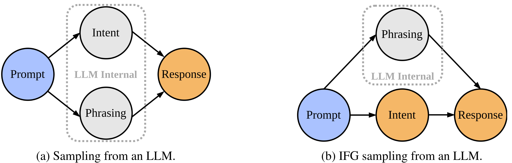
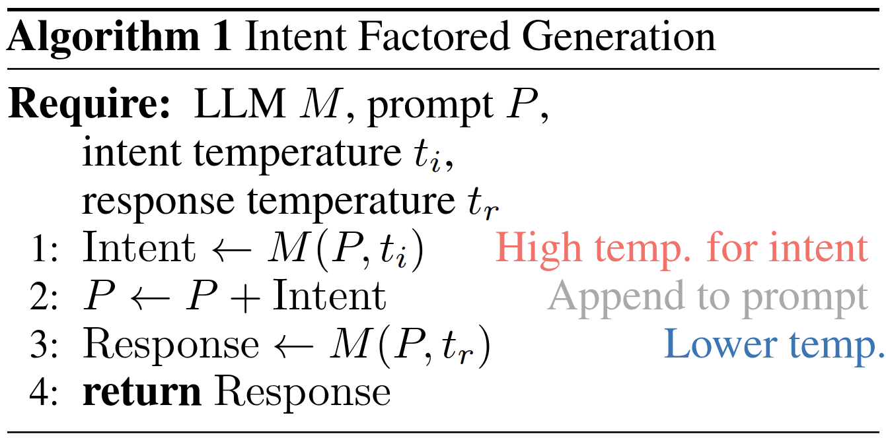
Relaxed Semantic Entropy
We introduce Relaxed Semantic Entropy (RSE) as a novel metric for measuring semantic diversity in language model generations. RSE relaxes the bidirectional entailment constraint of Semantic Entropy to one of bidirectional similarity, making it more suitable for longer generations where minor differences would be marked as distinct.
For a given set of generations \(\mathcal{G}\), we define equivalence classes \(c \in \mathcal{C}\) based on bidirectional similarity judgments from a few-shot prompted language model \(M_{sim}\). We construct an adjacency matrix \(A\) of size \(|\mathcal{G}| \times |\mathcal{G}|\) where \(A_{ij} = 1\) if and only if both \(M_{sim}(g_i, g_j)\) and \(M_{sim}(g_j, g_i)\) return true. We then extract connected components to determine equivalence classes.
The Relaxed Semantic Entropy is computed as:
$$\text{RSE}(\mathcal{G}) = -\sum_{c \in \mathcal{C}} \frac{|c|}{|\mathcal{G}|} \log(\frac{|c|}{|\mathcal{G}|})$$
where we estimate the probability of each cluster as the number of elements in the cluster normalized by the total number of elements. This provides an unbiased estimator that doesn't depend on generation probabilities.
Results
We run a series of experiments to evaluate the effectiveness of IFG.
Maths Reasoning
IFG few-shot prompted model achieves higher pass@k than the same model with a vanilla few-shot prompt. In subfigure (b), we show the test accuracy (pass@1) on MATH as a function of STaR iterations conducted on the training set. For all tested model scales (3B, 7B, 14B) and across all iterations, IFG+STaR outperforms STaR alone. The separation is largest in the earlier iterations, which shows that adding IFG improves data efficiency. We also note that as the model size increases, so does the improvement due to IFG. This shows that our method scales well and suggests that IFG will continue to be beneficial for even larger scale models.
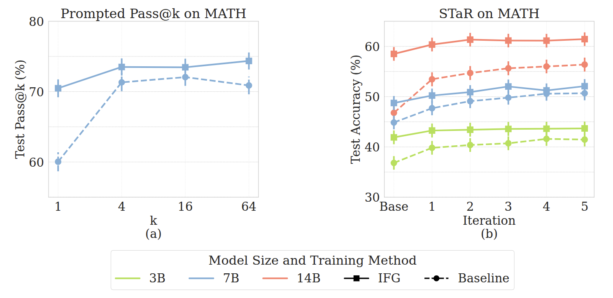
Code Generation
This table shows the performance of Qwen-2.5-Coder-32B on LiveCodeBench, both using IFG and without. We see that IFG achieves higher pass@5 and pass@10 than the baseline, solving 5 and 7 more problems respectively. Notably, we see that IFG solves more problems in 5 attempts than the baseline does in 10 attempts. However, IFG slightly underperforms in pass@1 accuracy. This is not surprising; individual solutions are less likely to be correct due to higher entropy, but our method makes sets of repeatedly drawn samples more likely to contain the correct solution.
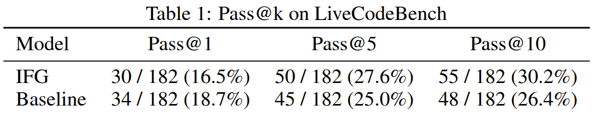
Instruction Following
Here we compare DPO to DPO+IFG. We assess the quality of the responses with the reward model we trained, and assess diversity with RSE, for different values of temperature (\(t\) for DPO or \(t_i, t_r\) for DPO+IFG). In subfigure (a), we plot these measurements, with points along the Pareto frontier in bold and connected with dotted lines. We see that for any desired level of diversity, DPO+IFG dominates DPO in terms of reward.
We then take these generations and aggregate them across temperatures for both DPO and DPO+IFG and measure the prevalence of undesirable traits in these generations using the Perspective API.
In subfigure (b), we show the probability that DPO scores higher than DPO+IFG for each negative trait, i.e., the DPO model is more undesirable than DPO+IFG.
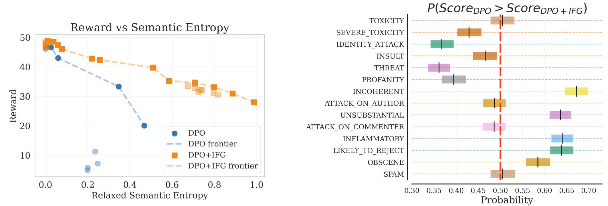
Language Modelling
We curate a dataset of news articles and reader comments from Reddit. We gather over 556k comments on 14k news articles. We collected this data from the r/news subreddit.
We plot measurements of RSE and Coherence measured for different sampling hyperparameter values of IFG, direct generation and Diverse Beam Search (DBS). We highlight points on the Pareto frontier for each method, and we note that for higher given values of RSE, IFG has higher coherence than direct generation. IFG also reaches the global maximum RSE. In subfigure (b), we also show some sample generations from points in each method's respective Pareto frontier.
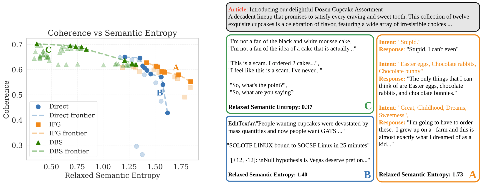
Conclusion
Here we provided your with a simple taste of our method and its wide applicability! Please go here to read the paper 📄 for more information. We hope these results and ease of implementation lead to future endeavours applying IFG to more algorithms and methods.
Citation
Website template based on work from Easy Academic Website and Jon Barron
We characterise LLM responses by intent which represents the semantics, and by phrasing. Typically both of these are latently sampled by the LLM conditioned on the prompt. In IFG we sample the intent explicitly (orange) instead of latently (grey). With IFG sampling, we can sample the intent with a higher temperature than the response to induce semantic diversity while using a lower temperature for the final response to maintain coherence.
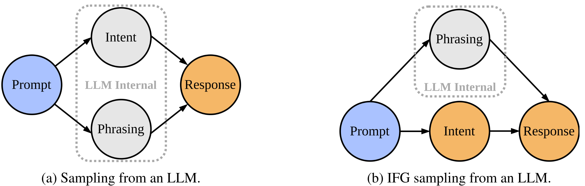
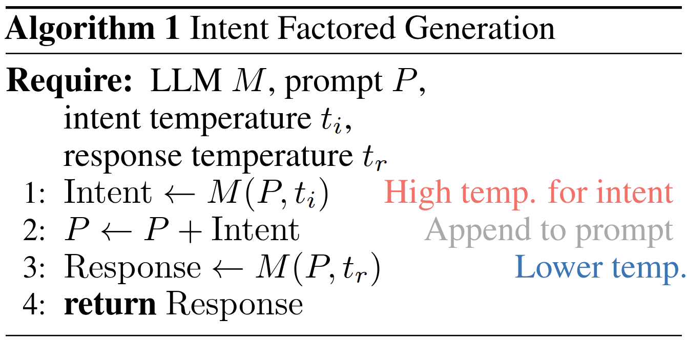
Relaxed Semantic Entropy
We introduce Relaxed Semantic Entropy (RSE) as a novel metric for measuring semantic diversity in language model generations. RSE relaxes the bidirectional entailment constraint of Semantic Entropy to one of bidirectional similarity, making it more suitable for longer generations where minor differences would be marked as distinct.
For a given set of generations \(\mathcal{G}\), we define equivalence classes \(c \in \mathcal{C}\) based on bidirectional similarity judgments from a few-shot prompted language model \(M_{sim}\). We construct an adjacency matrix \(A\) of size \(|\mathcal{G}| \times |\mathcal{G}|\) where \(A_{ij} = 1\) if and only if both \(M_{sim}(g_i, g_j)\) and \(M_{sim}(g_j, g_i)\) return true. We then extract connected components to determine equivalence classes.
The Relaxed Semantic Entropy is computed as:
$$\text{RSE}(\mathcal{G}) = -\sum_{c \in \mathcal{C}} \frac{|c|}{|\mathcal{G}|} \log(\frac{|c|}{|\mathcal{G}|})$$where we estimate the probability of each cluster as the number of elements in the cluster normalized by the total number of elements. This provides an unbiased estimator that doesn't depend on generation probabilities.
Results
We run a series of experiments to evaluate the effectiveness of IFG.
Maths Reasoning
IFG few-shot prompted model achieves higher pass@k than the same model with a vanilla few-shot prompt. In subfigure (b), we show the test accuracy (pass@1) on MATH as a function of STaR iterations conducted on the training set. For all tested model scales (3B, 7B, 14B) and across all iterations, IFG+STaR outperforms STaR alone. The separation is largest in the earlier iterations, which shows that adding IFG improves data efficiency. We also note that as the model size increases, so does the improvement due to IFG. This shows that our method scales well and suggests that IFG will continue to be beneficial for even larger scale models.
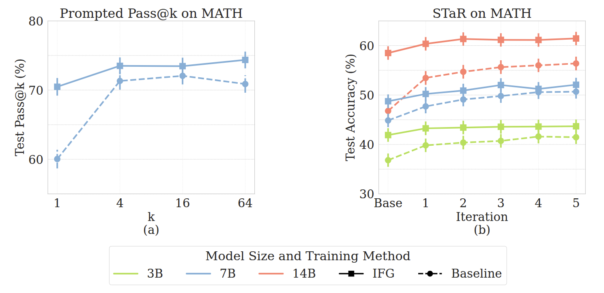
Code Generation
This table shows the performance of Qwen-2.5-Coder-32B on LiveCodeBench, both using IFG and without. We see that IFG achieves higher pass@5 and pass@10 than the baseline, solving 5 and 7 more problems respectively. Notably, we see that IFG solves more problems in 5 attempts than the baseline does in 10 attempts. However, IFG slightly underperforms in pass@1 accuracy. This is not surprising; individual solutions are less likely to be correct due to higher entropy, but our method makes sets of repeatedly drawn samples more likely to contain the correct solution.
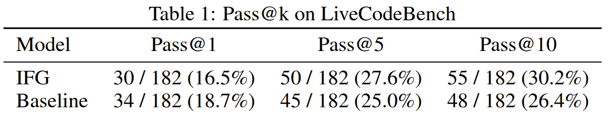
Instruction Following
Here we compare DPO to DPO+IFG. We assess the quality of the responses with the reward model we trained, and assess diversity with RSE, for different values of temperature (\(t\) for DPO or \(t_i, t_r\) for DPO+IFG). In subfigure (a), we plot these measurements, with points along the Pareto frontier in bold and connected with dotted lines. We see that for any desired level of diversity, DPO+IFG dominates DPO in terms of reward. We then take these generations and aggregate them across temperatures for both DPO and DPO+IFG and measure the prevalence of undesirable traits in these generations using the Perspective API. In subfigure (b), we show the probability that DPO scores higher than DPO+IFG for each negative trait, i.e., the DPO model is more undesirable than DPO+IFG.
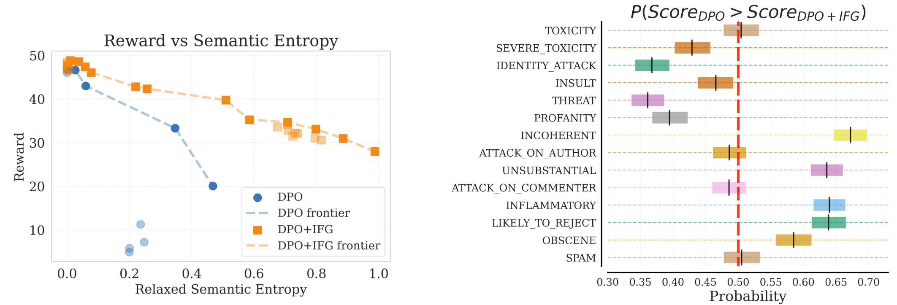
Language Modelling
We curate a dataset of news articles and reader comments from Reddit. We gather over 556k comments on 14k news articles. We collected this data from the r/news subreddit.
We plot measurements of RSE and Coherence measured for different sampling hyperparameter values of IFG, direct generation and Diverse Beam Search (DBS). We highlight points on the Pareto frontier for each method, and we note that for higher given values of RSE, IFG has higher coherence than direct generation. IFG also reaches the global maximum RSE. In subfigure (b), we also show some sample generations from points in each method's respective Pareto frontier.
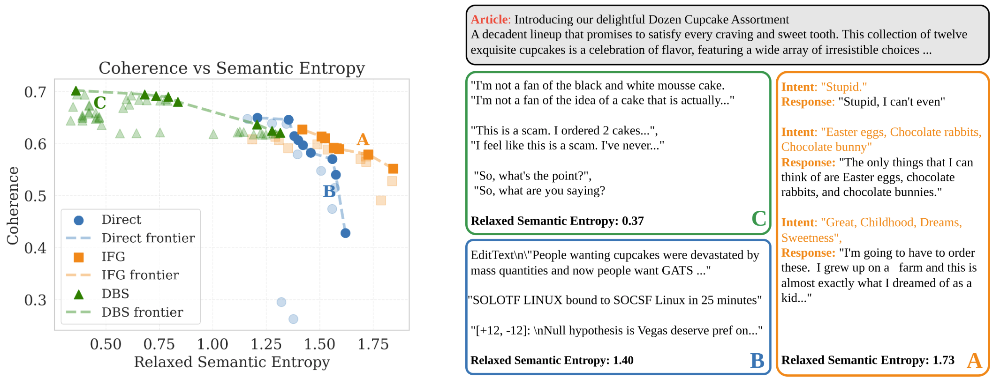
Conclusion
Here we provided your with a simple taste of our method and its wide applicability! Please go here to read the paper 📄 for more information. We hope these results and ease of implementation lead to future endeavours applying IFG to more algorithms and methods.
Citation
Website template based on work from Easy Academic Website and Jon Barron